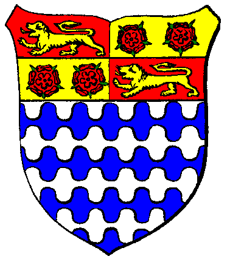

| Übersicht,
Newbies und Fragen |
|
Helden anwerben??
|
| Lola (RIP) |
bin noch ganz neu auf Lagerinsel Nord, und frag mich wo ich neue gruppenmitglieder anheuern kann?? Angeblich in der Taverne einer Stadt. jetzt gibts hier 3 städte (die brücke nach süden kann ich noch nicht überqueren): Lager Nord in der Mitte, eine ganz im westen, und eine ganz im osten. Die im Osten (=Minuial mi ALVERAN) ist die einzige in der ne taverne steht, gleich mehrere, aber wenn ich auf so ein haus draufklick kann man da nicht viel drin machen... kann ich in diesen 3 städten noch keine zustätzlichen helden anheuern, oder was mach ich falsch? |
29.03.10 11:20

|
|
Solara
 |
du musst nicht in die innenstadt und dort die tavernen suchen. du bleibst auf der stadt stehen und klickst dort die stadt an und dann auf taverne klicken :)
in den städten gibts immer unterschiedliche rassen und helden anzuwerben |
29.03.10 11:28
 |
|
Wolf ni Volon
 |
Zu Ergänzung: Neben den unterschiedlichen Rassen, gibt es Leute mit oder ohne einen Beruf anzuwerben. Wenn Du z.B. unbedingt einen Zwerg als Krieger haben möchtest oder einen Halbling als Bauer oder einen Elf als Magier usw. lohnt es sich, in nahe gelegenen Tavernen zu schauen, ob man dort bereits die richtig ausgebildeten Helden mit der gesuchten Rasse anheuern kann. Falls nicht, muß die angeheuerten Leute in einer Schule ausbilden. Handwerker z.B. in der Handwerkerschule. Solche Schulen findet man allerdings nicht in jeder Stadt. Sie stehen übrigens in der Innenstadt, wo genau, wird Du unter Bauten bei jeder Stadt ablesen können. Frag vor Ort im Regio-Chat, wo sie eine nahe Schule befindet. Die Ausbildung kostet natürlich Geld. |
29.03.10 19:37
|
|
| Raphael (RIP) |
Ausserdem git es keine fixfertigen Seeleute und Magier. Dazu muss man zwingend einen berufslosen ausbilden. |
29.03.10 22:26
|
|
| Zenno Gluthammer (RIP) |
Wenn du auf der Suche nach einem Zwerg bist, solltest du unbedingt in "Gathol Khazâd" auf Lummerland vorbeischauen. Hier gibt es die tapfersten Zwergen-Krieger und die talentiertesten Zwergen-Handwerker!;-) |
30.03.10 10:45
|
|
| Heindal (RIP) |
Bei Neu Moppelhof gibt es übrigens Wichtel ^^. |
30.03.10 20:48
|
|
Krâtos
 |
Neu Toppelmopf heißt die Stadt, du gemeiner Irreführer =P =) |
30.03.10 21:54
|
|
| Heindal (RIP) |
oh, ja richtig ... *g*, das war aber tatsächlich keine Absicht - doof ist das Copy Paste nicht klappt :-(. |
31.03.10 20:29
|
|
Übersicht,
Newbies und Fragen
|